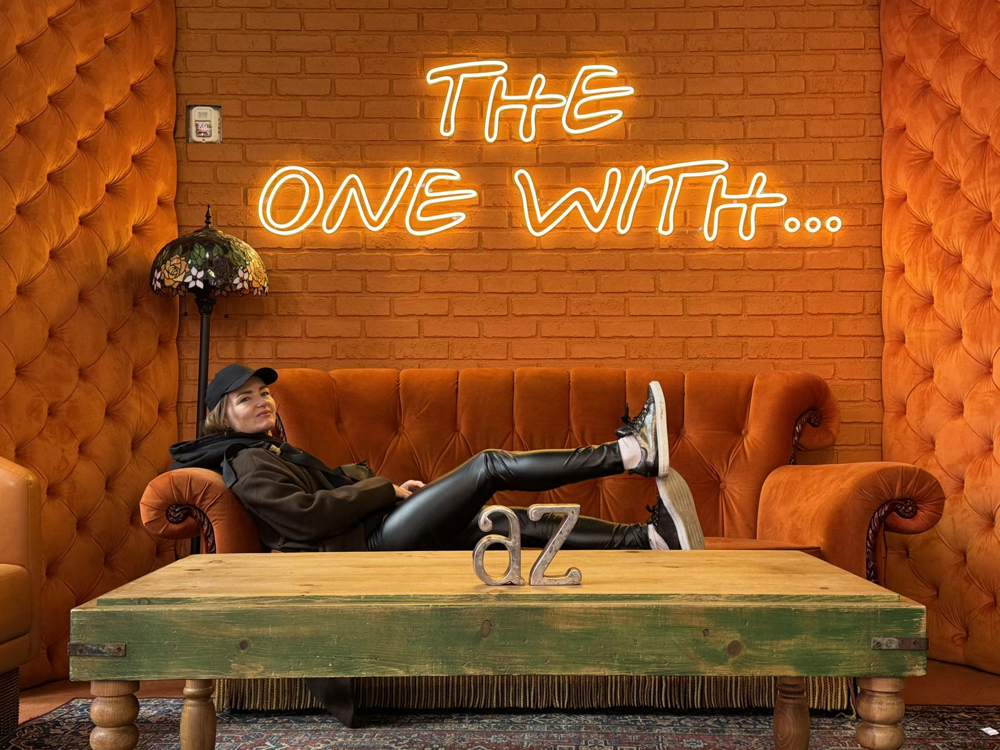
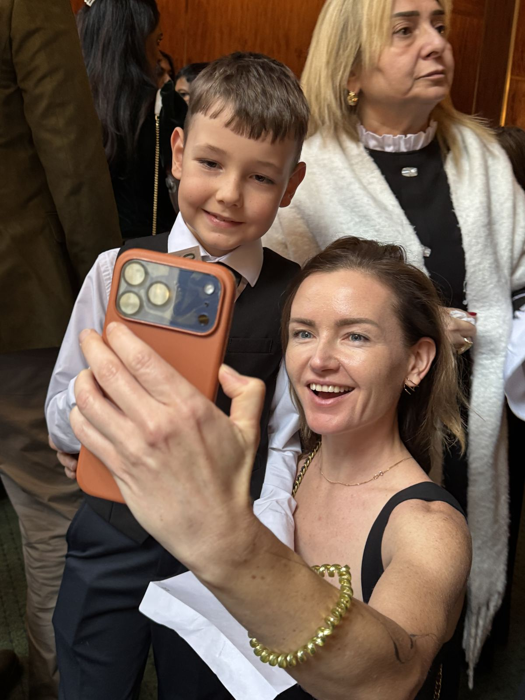
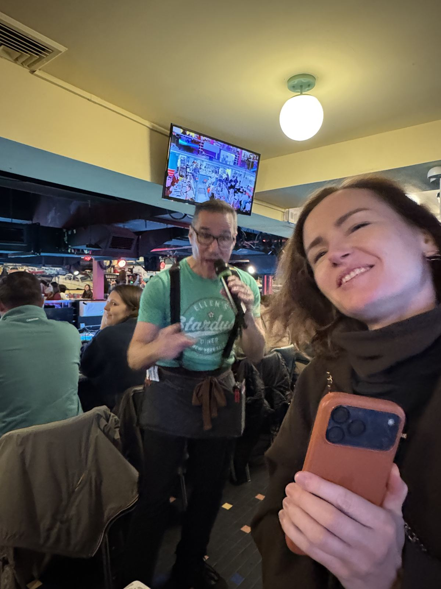

1.
Репетиция в Карнеги-холле
Утром репетиция в зале. Мы сидели в Карнеги-холле. Макар сидел за роялем в Карнеги-холле. Это разные вещи.

День, ради которого всё затевалось.
Утром репетиция в зале. Мы сидели в Карнеги-холле. Макар сидел за роялем в Карнеги-холле. Это разные вещи.

Макар выступил и занял первое место. Ещё ему дали $50 как самому младшему участнику.
Это был единственный раз за поездку, когда Нью-Йорк заплатил нам, а не мы ему.
Потом пошли в публичную библиотеку на Пятой авеню. У входа два каменных льва. Их зовут Терпение и Стойкость. В тот день нам пригодилось и то и другое.

Ужинали в Ellen's Stardust Diner на Бродвее. Официанты там — будущие бродвейские актёры, и они поют прямо между столиками. Кто-то несёт тарелки, кто-то берёт высокую ноту. Мы отмечали первое место, и казалось, что поют немного и для нас.